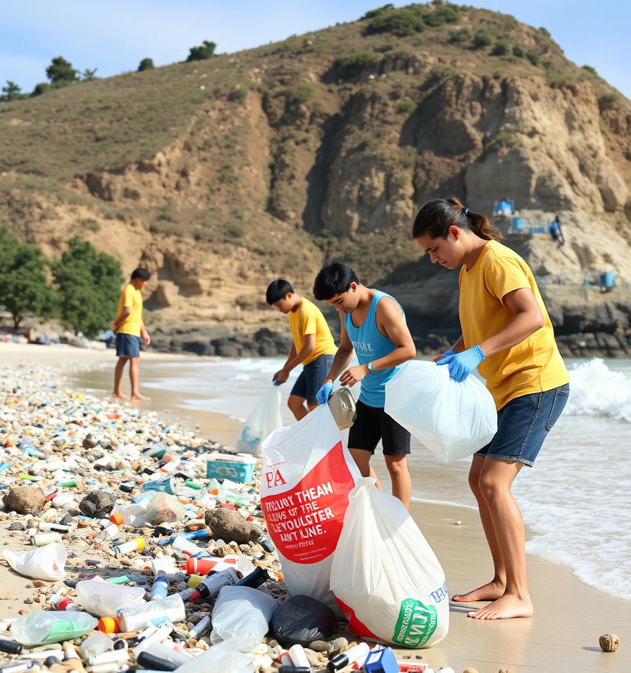
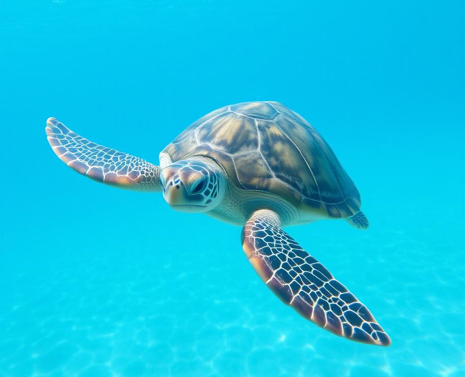
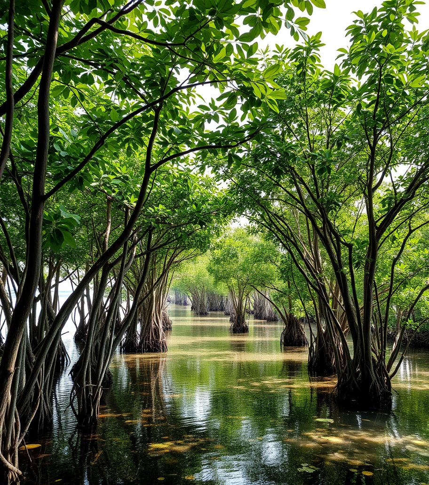
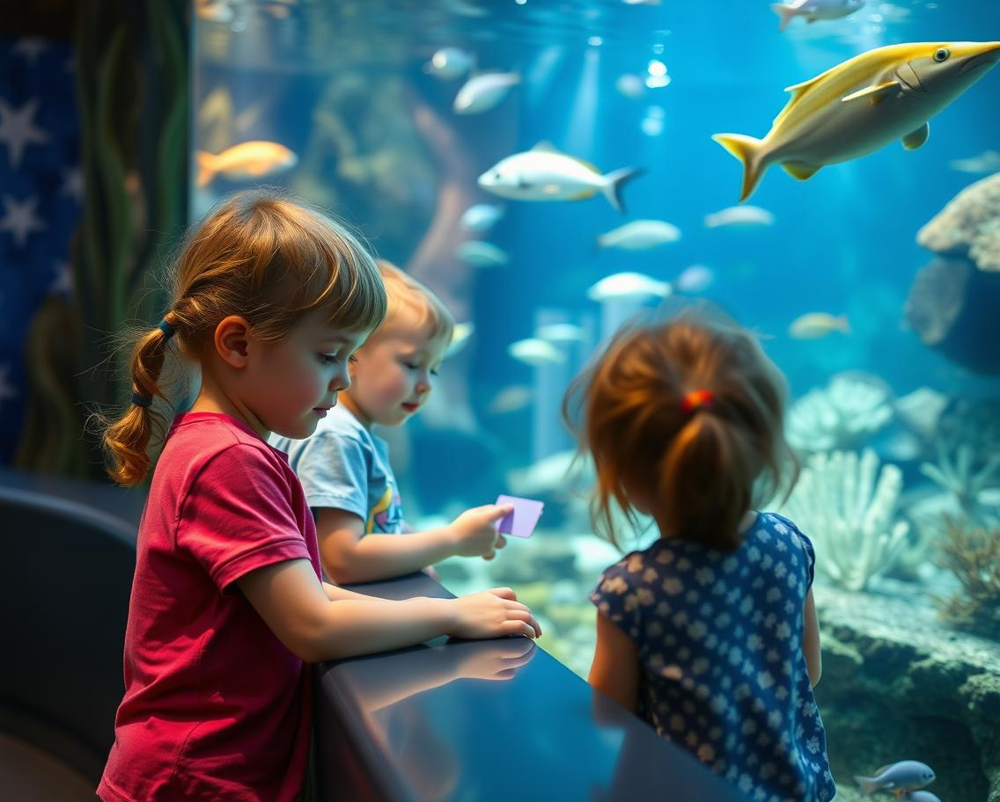

Welcome to Blue Horizon Conservation
About Blue Horizon Conservation
At Blue Horizon Conservation, our mission is to protect and preserve the world's oceans for future generations. We are dedicated to combating marine pollution, conserving endangered species, and restoring vital marine ecosystems. Our vision is a world where oceans are thriving, teeming with life, and free from the threats of human activity. Through education, advocacy, and innovative conservation strategies, we aim to inspire a global movement towards sustainable ocean stewardship. Together, we can turn the tide and ensure a brighter, bluer horizon for all!
Current Projects
At Blue Horizon Conservation, we are actively engaged in a variety of projects aimed at safeguarding our oceans. Below are some of our key initiatives:
Coral Reef Restoration

Our Coral Reef Restoration project focuses on rehabilitating damaged reefs by planting new corals and monitoring their growth. By restoring these vital ecosystems, we help protect the diverse marine species that call coral reefs home.
Plastic-Free Oceans Campaign
This campaign aims to reduce plastic pollution in our oceans by organizing clean-up drives, advocating for sustainable practices, and raising awareness about the impact of single-use plastics. We believe that a plastic-free ocean is within reach if we all work together.
Protecting Endangered Marine Species
Through our efforts to protect endangered species like sea turtles, whales, and sharks, we are ensuring that these magnificent creatures continue to thrive in their natural habitats. Our work includes tracking populations, combating illegal hunting, and promoting conservation-friendly policies.
Coastal Ecosystem Preservation
Our Coastal Ecosystem Preservation project is dedicated to conserving critical coastal habitats such as mangroves, salt marshes, and seagrass beds. These areas not only support biodiversity but also protect shorelines from erosion and storm surges
Ocean Education and Awareness
Education is at the heart of our mission. Through workshops, school programs, and public campaigns, we strive to educate communities about the importance of ocean conservation and inspire the next generation of ocean advocates.
These projects are just a glimpse of our ongoing efforts to protect our oceans. Join us in making a lasting impact on the blue horizon!
Contact Us
Email: info@oceanguardians.org
Phone: (555) 123-4567
Address:
Ocean Guardians Headquarters
123 Seaside Blvd, Suite 101
Coastal City, CA 90210
USA
Social Media:
Facebook: facebook.com/OceanGuardians
Twitter: @OceanGuardians
Instagram: @OceanGuardians_org
Business Hours:
Monday - Friday: 9:00 AM - 5:00 PM (PST)
Saturday - Sunday: Closed
For general inquiries, partnership opportunities, or to get involved, please reach out via email or follow us on social media!